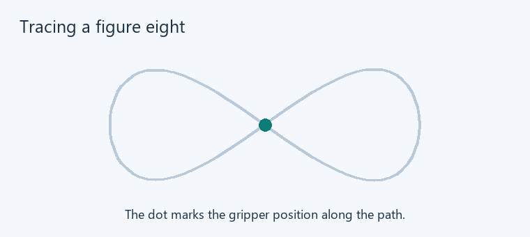
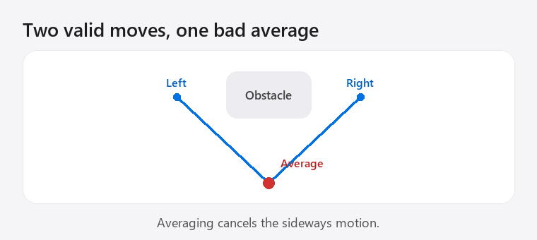

Reading Robot Learning Code Made Me Rethink What the Robot Actually Learns
One of the exercises in ETH’s Robot Learning course asks you to make a robot arm trace a figure eight. Same arm, same path, two approaches. One uses inverse kinematics and PID control. The other uses a policy trained with PPO.

My first question was obvious: which one works better?
Then I followed the code far enough to ask a more useful question. Who actually decides where the arm goes next?
Did it know a turn was coming?
In the first approach, the trajectory is already laid out. Inverse kinematics turns each desired gripper position into a set of joint angles, and the PID controller makes the joints track those angles. In the PPO approach, the policy proposes the target joint angles, and MuJoCo’s position actuators handle the tracking.
I’d been thinking of it as “PID versus PPO.” Tracing the commands through the code made it clearer. The part handed over to the learned policy was the decision about which joint angles to aim for next. There was still a whole layer of control underneath it.
That changed how I read the figure-eight comparison. Say the learned policy falls behind at a turn. My first instinct would have been to train it longer. Now I’d ask, did it know a turn was coming?
One system follows a trajectory prepared in advance. The other mainly practiced reaching stationary targets, then had to follow a target that kept moving. If the policy only sees the current target, it has to respond as that target moves. Watching the whole figure eight on screen, it’s surprisingly easy to forget that the policy can’t see the shape I’m seeing.
I’d try two small changes before touching the algorithm. First, let the policy see the next waypoint and see whether it starts turning earlier. Then, in a separate experiment, train it on moving targets and see whether that alone helps. I could do both at once and probably get a more interesting video, but I’d learn less from it.
Two good demonstrations can teach a bad move
In the imitation-learning exercise, the line that made me stop was the one calculating mean squared error between predicted and demonstrated actions.
Imagine the gripper is facing an obstacle. In one demonstration, I move it two centimeters to the left. In another, I move it two centimeters to the right. Both routes work. If the model gets the same observation in both cases and has to predict a single action, its best answer under squared error can be zero sideways movement. If both demonstrations also move forward, the average action points straight at the obstacle.

What I like about this example is that the loss is doing exactly what I asked it to do. I just hadn’t thought through what a good answer to the loss would look like on the table.
That’s also when diffusion policies started to make more sense to me. I’d mostly thought of diffusion as a way to turn noise into an image. Here, the interesting thing is that a policy can represent two different sequences of moves that both make sense. And the sequence matters. Going left on the first step and changing your mind two steps later can still put the gripper right in front of the obstacle. I’d want to watch whether the arm actually follows through on the route it starts.
There’s a cheap experiment I’d try first. Collect demonstrations that consistently go around the same side, then train the original policy again. If it reliably gets the cube into the bin, I’ve learned something about the task: one consistent route is sufficient for that setup. I’d reach for a diffusion policy when I actually want the arm to retain both options, or when choosing between them matters across layouts.
The interesting frame is usually a few seconds earlier
When an arm drops a cube or hits something, that’s the moment I notice. It’s also a pretty late place to start looking.
Imagine the cube clips the side of an obstacle. Rewind a little and the arm might have cut the turn too close. Rewind again and maybe it picked up the cube off-center, so the clearance that normally works was gone before the arm even started turning. Those are different things to teach. I could show it how to line up before grasping, how to leave more room on the turn, or how to back away once the cube is already too close.
That’s what made DAgger click for me. When I demonstrate a task from start to finish, I mostly visit states that make sense to me. When the policy runs, it can take the arm somewhere I would never have put it. If I take over while it’s still holding the cube, I can demonstrate a move that barely shows up in a clean run: back up a bit, then go around.
When I take over changes the lesson. Step in before contact and I might teach the robot to make room for a turn. Wait until the cube falls and I’m teaching it to pick the cube up again. Both count as corrections. If all I write down is “collected ten more demonstrations,” I lose the part I actually want to understand.
What would convince me it learned to recover?
Say I add those corrections and the task success rate goes up. I’d still want to know whether the arm gets into trouble less often or gets out of trouble more often. A full run can end successfully either way.
I’d save a few simulator states where the old policy has already gone off course but can still recover. Then I’d start both policies from those same states. For one of them, I’d plot the gripper paths from above. Does either arm back away before turning? How much clearance does it create? Where do the two paths start to diverge?
I’d also keep a clip where both fail. If both arms keep missing the cube before they even reach the obstacle, that tells me where I’d spend the next round of demonstration time. Ten more examples of backing away won’t give either policy much practice lining up a grasp.
The biggest change for me is what I do when I pause a video. I used to think about what to tune. Now I’m more likely to rewind a couple of seconds and look for the first moment when the arm still had a decent way out. Then I go back to the code. What could the policy see at that moment? What moves could it propose? Had it ever been shown what to do from there?
Sometimes I get all the way through those questions and the next experiment is almost embarrassingly small. Put the next waypoint in the observation. Record both ways around the obstacle. Or show the arm one move that never appears in a clean demonstration: you’ve gone too far. Back up a little.